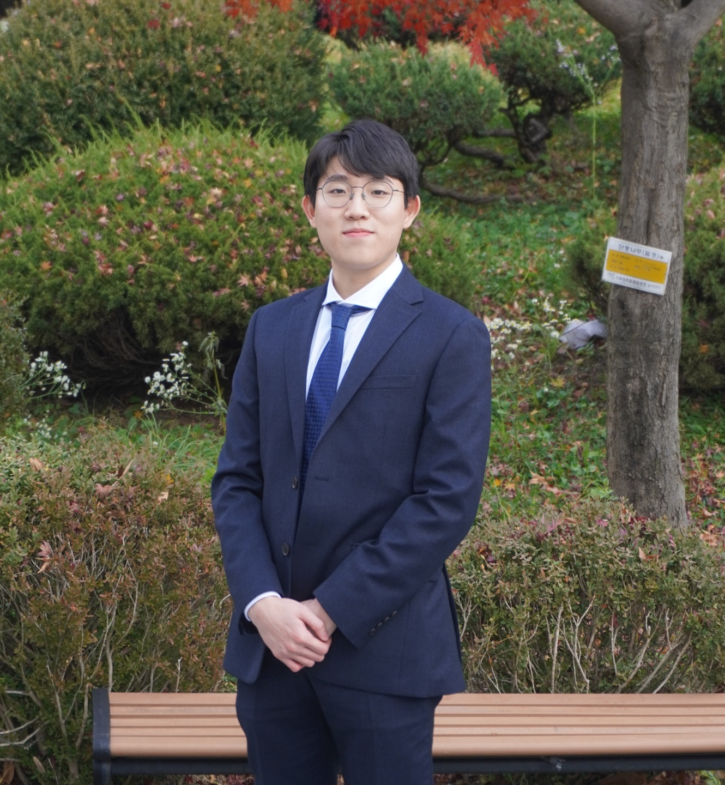
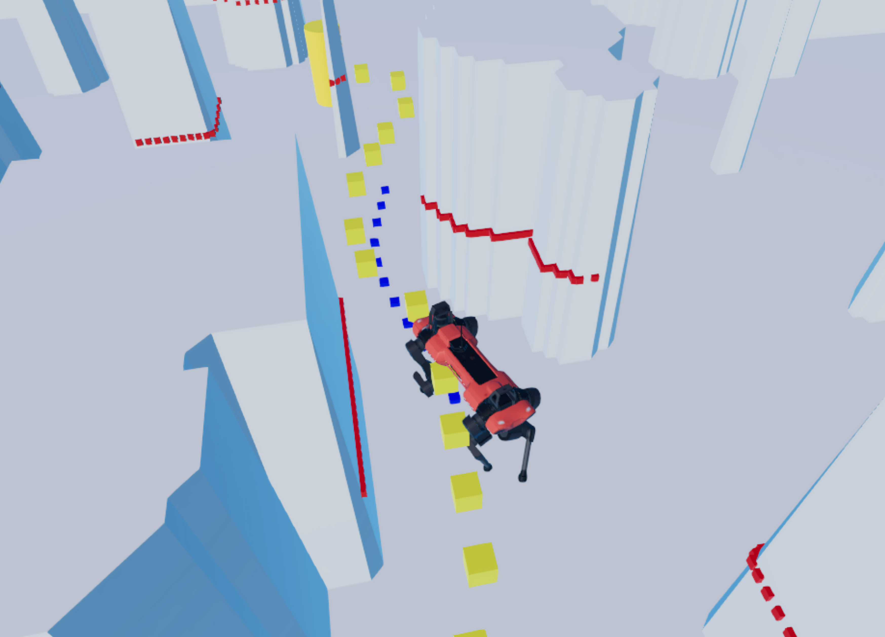
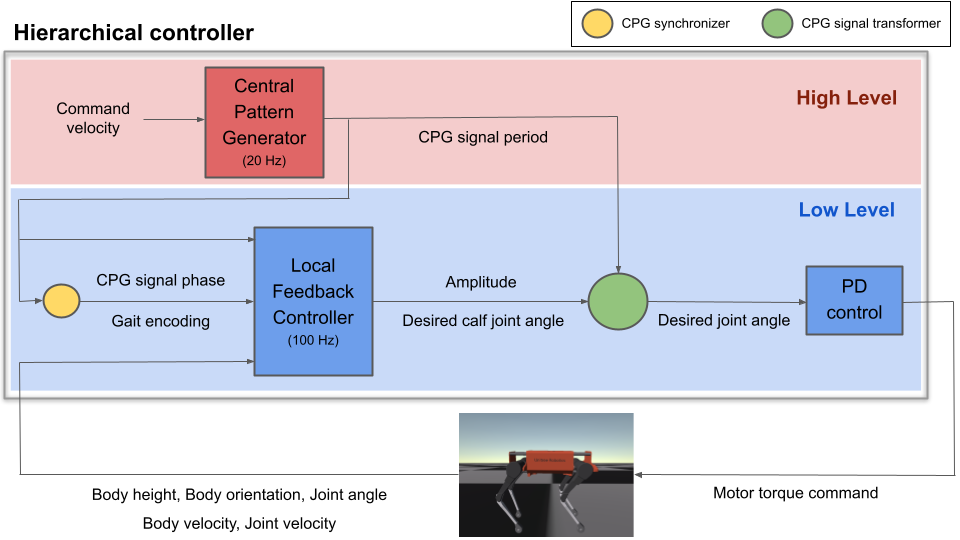

|  | I am currently a student researcher at KAIST (Korea Advanced Institute of Science and Technology) advised by Jemin Hwangbo. My research interest includes Legged Robotics and Machine Learning. Before, I received my BS at Seoul National University majoring in mechanical engineering. |
— 2022 —
|  |
Learning Forward Dynamics Model and Informed Trajectory Sampler for Safe Quadruped Navigation Yunho Kim, Chanyoung Kim, Jemin Hwangbo Robotics: Science and Systems (RSS 2022) [Project page] [Paper] |
|  |
Learning multiple gaits of quadruped robot using hierarchical reinforcement learning Yunho Kim, Bukun Son, Dongjun Lee arXiv Preprint 2021 [Project page] [Paper] |